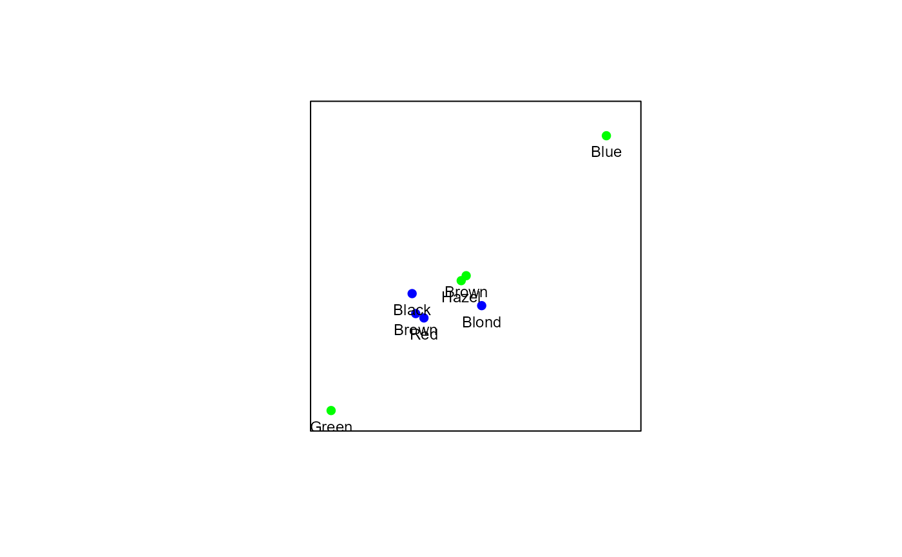
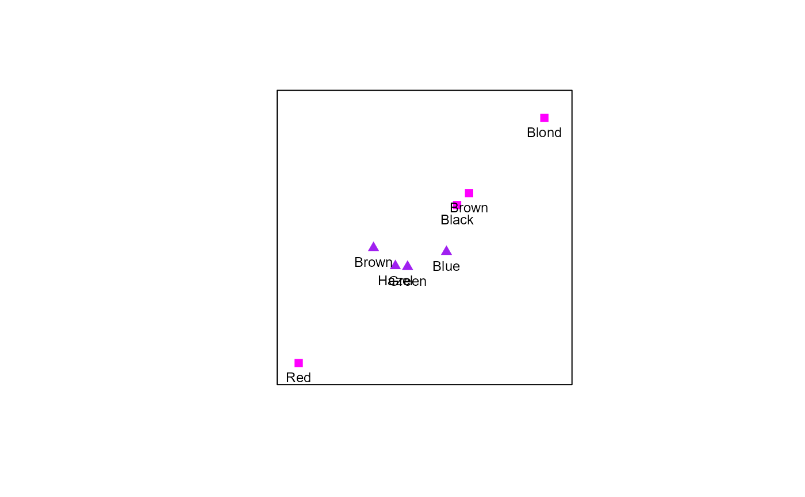
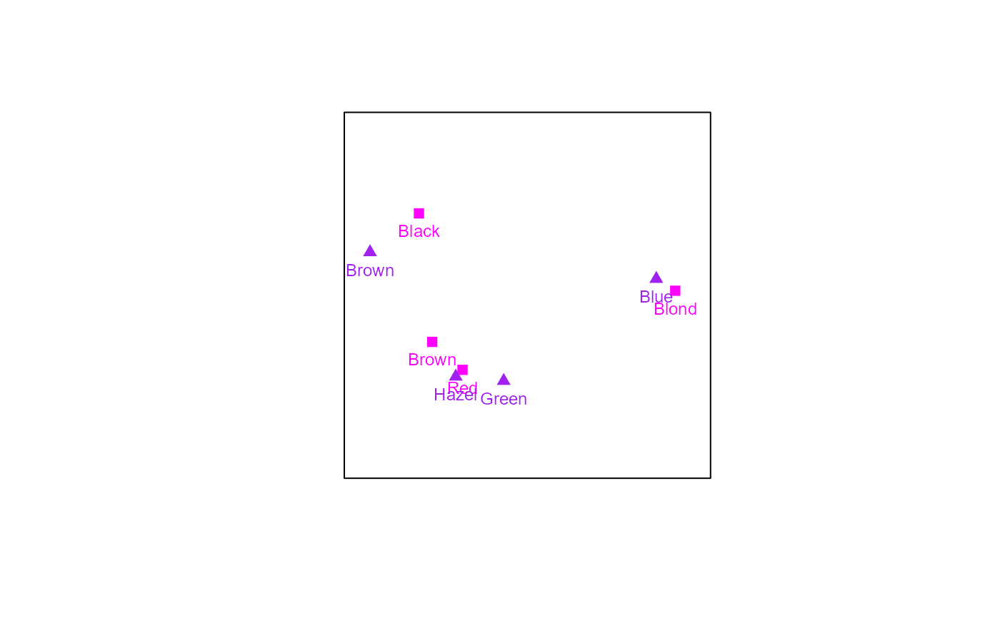

CA.RdThis function produces a list of elements to be used for CA biplot construction by approximation of the Pearson residuals.
object of class biplot obtained from preceding function biplot(center = FALSE). In order to maintain the frequency table, the input should not be centered or scaled. For CA, bp should be a contingency table.
dimension of the biplot. Only values 1, 2 and 3 are accepted, with default 2.
which eigenvectors (canonical variates) to extract, with default 1:dim.biplot.
which correspondence analysis variant, with default "Princ", presents a biplot with rows in principal coordinates
and columns in standard coordinates. variant = "Stand", presents a biplot with rows in standard coordinates and columns in
principal coordinates. variant = "symmetric", presents a symmetric biplot with row and column standard coordinates scaled
equally by the singular values.
logical value to request lambda-scaling, default is FALSE. Controls stretching or shrinking of
column and row distances.
A list with the following components is available:
Combined data frame of the row and column coordinates.
Numer of levels in the row factor.
Numer of levels in the column factor.
Diagonal matrix of row profiles.
Diagonal matrix of column profiles.
Weighted row profiles.
Weighted column profiles.
Row coordinates based on the selected variant.
Column coordinates based on the selected variant.
Correspondence Matrix.
Standardised Pearson residuals.
Singular value decomposition solution: d, u, v.
Depending on what was specified in CA argument.
The dimension of the biplot.
The computed lambda value if lambda-scaling is requested.
Contribution of the singular values, based on the CA variant.
# Creating a CA biplot with rows in principal coordinates:
biplot(HairEyeColor[,,2], center = FALSE) |> CA() |> plot()

# Creating a CA biplot with rows in standard coordinates:
biplot(HairEyeColor[,,2], center = FALSE) |> CA(variant = "Stand") |>
samples(col=c("magenta","purple"), pch = c(15,17), label.col = "black") |> plot()

# Creating a CA biplot with rows and columns scaled equally:
biplot(HairEyeColor[,,2], center = FALSE) |> CA(variant = "Symmetric") |>
samples(col = c("magenta","purple"), pch = c(15,17), label.col = "black") |> plot()
